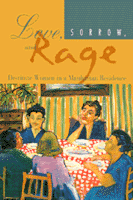

<body bgcolor="#FFFFFF" text="#000000" link="#0000FF" vlink="#CC0000" alink="#CC0000"><center><hr width="350" size="1" align="center" noshade>Poor women's lives and stories of the street, etched into a narrative of the heart<hr width="350" size="1" align="center" noshade><p><a href="https://cdcshoppingcart.uchicago.edu/Cart/ChicagoBook.aspx?ISBN=9781566397063&&PRESS=temple" target="_top">Buy this book!</a> | <a href="https://cdcshoppingcart.uchicago.edu/Cart/Cart.aspx?PRESS=temple" target="_top">View Cart</a> | <a href="https://cdcshoppingcart.uchicago.edu/Cart/Cart.aspx?PRESS=temple" target="_top">Check Out</a></p><p></p></center><!--none//--><h1>Love, Sorrow, and Rage</h1>
<H2>Destitute Women in a Manhattan Residence</H2>
<h3>Alisse Waterston</h3>
<P>cloth 1-56639-706-5 $80.50, Jun 99, <FONT COLOR=#990033>Available</FONT>
<br>paper 1-56639-707-3 $31.95, Jun 99, <FONT COLOR=#990033>Available</FONT>
<br>Electronic Book 1-43990-777-3 $31.95 <FONT COLOR=#990033>Available</FONT>
<BR> 235 pp
5.5x8.25
1&nbsp;table
</P><BLOCKQUOTE><I>"A brilliant ethnography of women on the edge.... Waterston is one of our best urban ethnographers, mixing intelligent fieldwork and sheer novelistic splendor in a masterful work. A must-read. This book should be standard for every ethnographic methods and theory course on urban life, women, poverty, and race."</I>
<BR>&#151<B>Terry Williams</B>, New School for Social Research<I></I></BLOCKQUOTE>
<P><I>Love, Sorrow, and Rage</I> gives powerful voice to women like Nora Gaines and Dixie Register, who tell us what it's like to live on the streets of New York, how it feels to lose your mind, about the taste of crack cocaine, and the sweetness of friendship. In this novel-like narrative of homelessness and hope, poor women share a table, their meals, and their intimacies with author Alisse Waterston. On the pages of this impassioned ethnography, Waterston puts mythic, demonized bag-ladies to rest, and in so doing, brings ordinary women to life. </P>
<P>From drug addiction and the spread of AIDS to the growing gap between rich and poor in the U.S., the topics in this book get front-page coverage in daily newspapers across the country. Waterston seeks to understand, to explain, and to solve the human crisis that surrounds us. Towards this end, she challenges us to look at the ways in which our society and the workings of our political, economic, and popular culture contribute to the suffering experienced by our most vulnerable citizens. </P>
<P>An important corrective to popular depictions of the urban poor, <I>Love, Sorrow, and Rage</I> provides a penetrating analysis of the causes and consequences of poverty. It offers a deeper understanding of what leads to and perpetuates poverty and of the human complex of love, sorrow, and rage felt by those who experience it. </P>
<I><P>Love, Sorrow, and Rage</I> will engage readers interested in urban studies, women's studies, social issues and policies, anthropology, sociology, political economy, and New York City life. </P>
<BR>&nbsp;<h2>Excerpt</h2><P>Excerpt available at <a href="http://www.temple.edu/tempress">www.temple.edu/tempress</a></p>
<BR>&nbsp;<h2>Reviews</h2>
<p><i>"</i>Love, Sorrow, and Rage<i> tells us something powerful and intimate about a group of poor women living in the wealthiest city on the face of the earth. In the process, Alisse Waterston demolishes a series of myths about the 'urban underclass' that have perverted both social theories and social policies. Indeed, Waterston has succeeded where an entire generation of anthropologists, sociologists, and psychologists has failed: she renders in vivid detail, and with a towering passion of her own, the ways in which ostensibly impersonal forces&#151racism, gender inequality, ill-conceived social policies&#151come to have their effect in poor women's lives. Accountable to a large literature but unshackled from the constraints of jargon, </i>Love, Sorrow, and Rage<i> takes flight as bitter and persuasive poetry. It should be required reading for physicians, social workers, policy-makers&#151indeed, for all those fortunate enough to meet women whose lives have been damaged by the structural forces that come alive in this remarkable and harrowing book."</i>
<br>&#151<b>Paul Farmer</b>, Harvard Medical School
<p><i>"A moving and beautiful book. In so much of what is written about 'the homeless' and 'the mentally ill,' the people themselves are missing. Alisse Waterston brings out their humanity. Nothing can replace an experience, but reading a book like this is the next best thing."</i>
<br>&#151<b>Ezra Susser</b>, Columbia University
<p>Read a <a href="../authors/1462_review.pdf">review</a> from <I>Contemporary Sociology</I>, Volume 30.1 (January 2001), written by Jacquelyn Litt (pdf).
<BR>&nbsp;<h2>Contents</h2><P>
<P>Acknowledgments
<br>Prologue: An Urban Ethnography for Our Times
<br>1. Home, Some Place
<br>2. Some Kind of Nobody
<br>3. Drinkin' and Druggin'
<br>4. Sorrow and Melancholia
<br>5. Abuses of the Spirit
<br>6. Love and Other Intimacies
<br>7. Odd Women Out
<br>8. Pistachio Nuts
<br>9. A Madness in Me
<br>10. Rage
<br>11. Difference and Other Infections of the Day
<br>12. The Road to Clarity
<br>Notes
<br>References
<br>Index
</P><BR>&nbsp;<H2>About the Author(s)</H2>
<P><B>Alisse Waterston</B> is Professor of Anthropology at John Jay College of Criminal Justice, City University of New York. She is editor of <i>An Anthropology of War: Views from the Frontline</i> (Berghahn Books), co-editor of <i>Anthropology off the Shelf: Anthropologists on Writing</i> (Wiley-Blackwell) and author of <i><a href="885_reg.html" target="_top">Street Addicts in the Political Economy</a></i> (Temple).</P>
<BR><H2>Subject Categories</H2>
<p><A HREF="/tempress/urban.html" TARGET="_top">Urban Studies</a>
<BR><A HREF="/tempress/women.html" TARGET="_top">Women's Studies</a>
<BR><A HREF="/tempress/sociology.html" TARGET="_top">Sociology</a>
</p>
<p align="center"><a href="https://cdcshoppingcart.uchicago.edu/Cart/ChicagoBook.aspx?ISBN=9781566397063&&PRESS=temple" target="_top">Buy this book!</a> | <a href="https://cdcshoppingcart.uchicago.edu/Cart/Cart.aspx?PRESS=temple" target="_top">View Cart</a> | <a href="https://cdcshoppingcart.uchicago.edu/Cart/Cart.aspx?PRESS=temple" target="_top">Check Out</a></p><p><font face="Arial" size="1"><a href="copyright.html" onMouseOver="window.status='Web Copyright Policy';return true;" onMouseOut="window.status=''" title="Web Copyright Policy">&copy;</a> 2015 <a href="http://www.temple.edu" target="new" onMouseOver="window.status='Link to Temple University home page';return true;" onMouseOut="window.status=''" title="Link to Temple University home page">Temple University</a>. All Rights Reserved. http://www.temple.edu/tempress/titles/1462_reg.html</font></p>